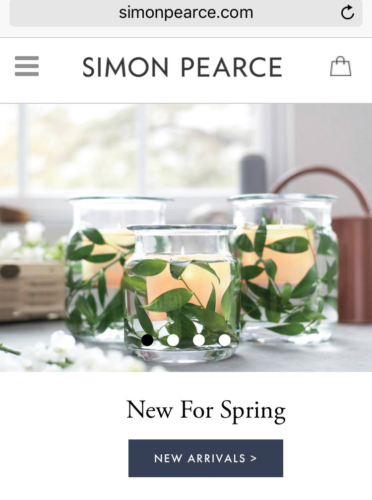
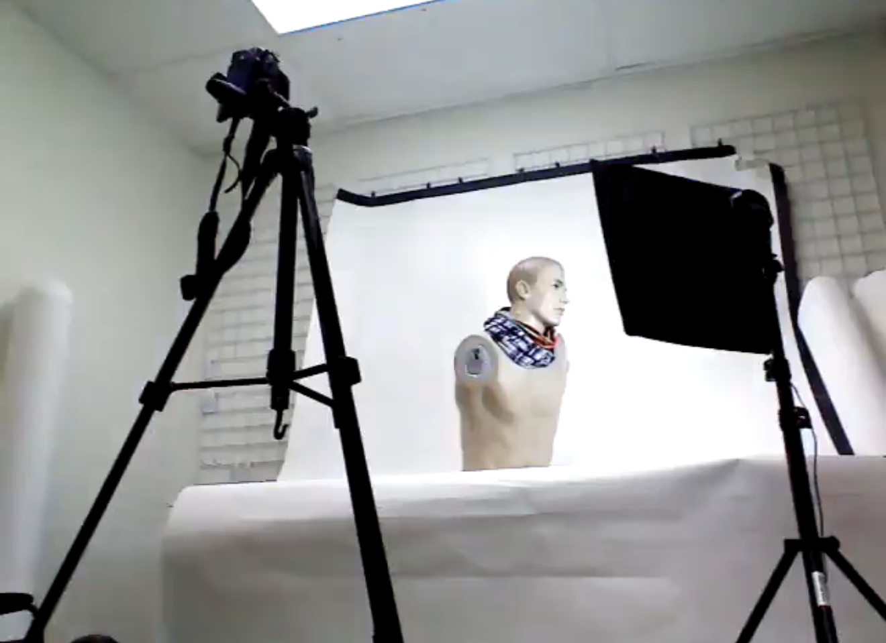
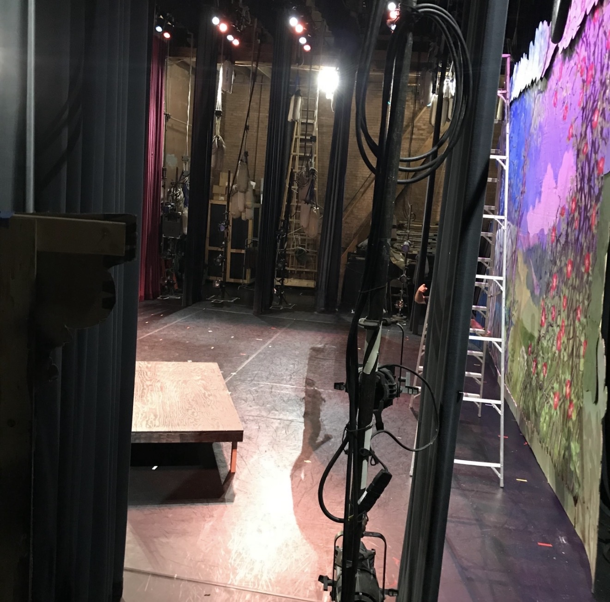
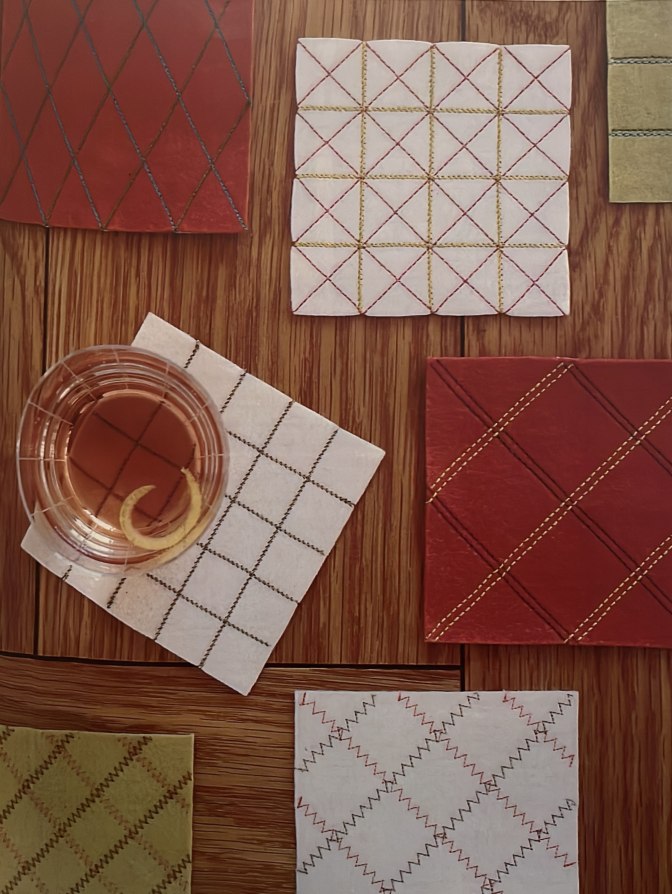

Keurig Dr Pepper
Campaign operations
2016 – 2017
- $11M customer appreciation campaign
- Delivered in 10 days
- 200+ digital campaigns
- Briefs · Copy · Legal · CMS · Digital production · Reporting
Connecting creative vision, commercial strategy & operational execution.
View selected work
With 20+ years of experience across luxury beauty, fashion, merchandising and digital, I bring a unique perspective that blends creative thinking with commercial strategy and operational excellence.
I thrive in dynamic environments, turning ideas into impactful campaigns, beautiful products and seamless customer experiences.
Campaign operations
2016 – 2017

Merchandising & operations
2017 – Present

eCommerce + digital merchandising
2013 – 2016

Operations · eCommerce merchandising + leadership
2010 – 2013

Editorial press

Global advertising + global design
2004 – 2008

Creative operations






I understand what makes an idea compelling — and what it takes to get it across the finish line.
Curious by nature. Commercial by instinct. Creative by perspective. After 20+ years across luxury beauty, fashion, retail and digital, I’ve built a career on connecting people, priorities and ideas — turning vision into meaningful, measurable results.